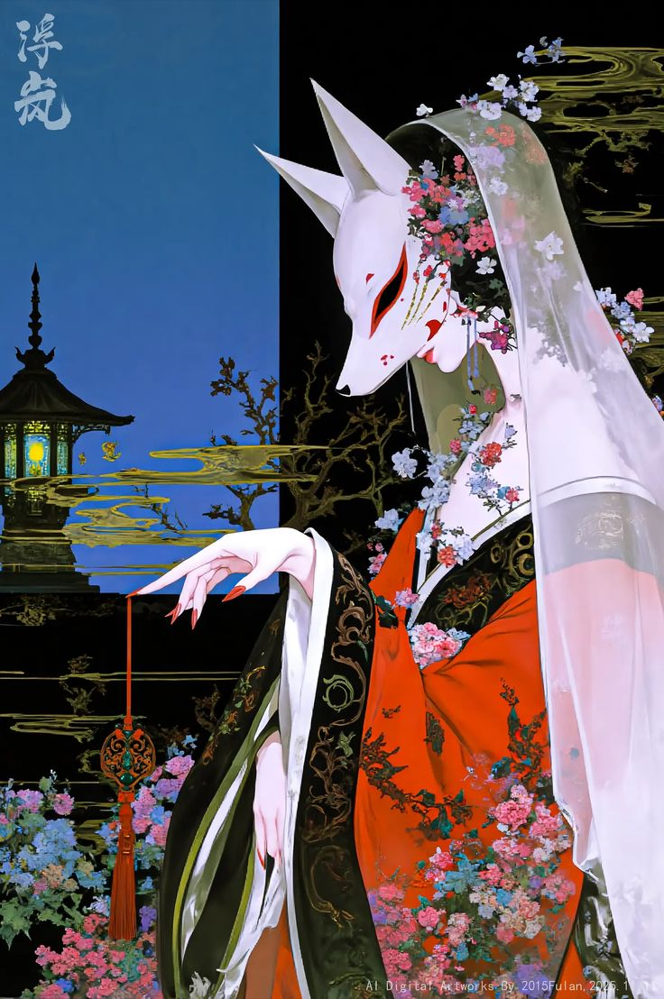
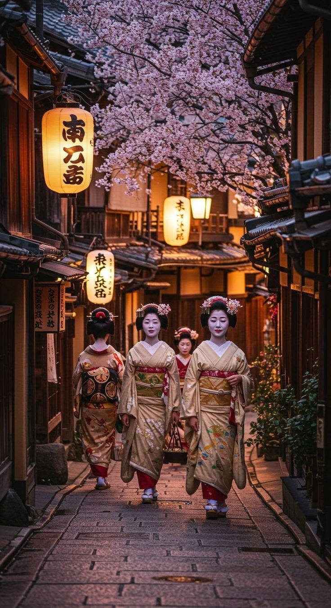
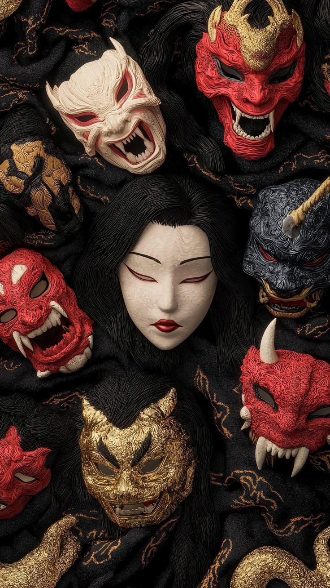
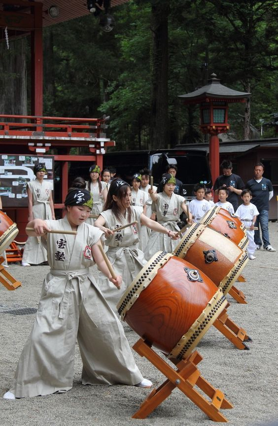
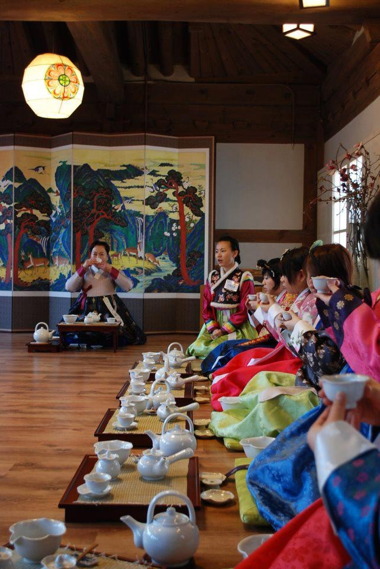
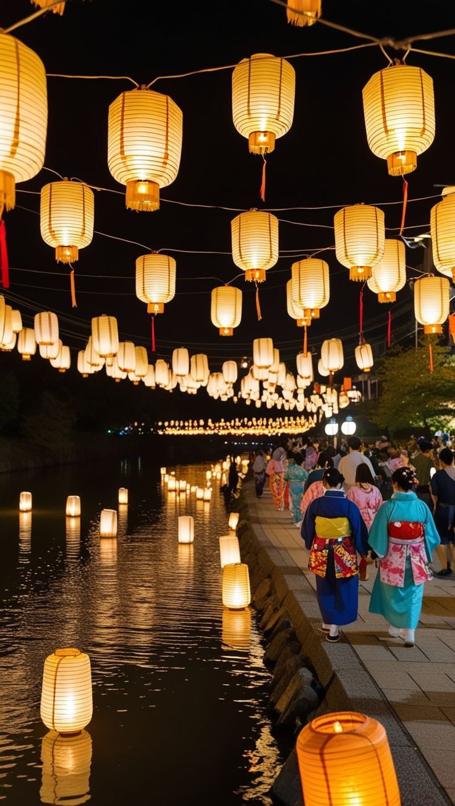

Japão para Visitantes
Um guia introdutório para te guiar em uma jornada de descobertas pelo Japão.
Um guia introdutório para te guiar em uma jornada de descobertas pelo Japão.

O folclore do Japão é um dos mais ricos e complexos do mundo, formado ao longo de séculos por crenças religiosas, tradições orais e influências culturais diversas. Ele está profundamente ligado ao Xintoísmo e ao Budismo, que moldaram a forma como os japoneses interpretam o mundo espiritual e os fenômenos da natureza. Um dos elementos centrais do folclore japonês são os chamados Yokai (妖怪 / ようかい yōkai), criaturas sobrenaturais que podem assumir diversas formas e comportamentos. Alguns são considerados perigosos ou travessos, enquanto outros podem ser protetores. Entre os mais conhecidos estão:

As Geishas (芸者 / げいしゃ geisha) são artistas tradicionais do Japão, conhecidas por sua habilidade em entreter por meio de música, dança, conversação e etiqueta refinada. Diferente de interpretações equivocadas comuns fora do Japão, geishas não estão relacionadas à prostituição, mas sim a uma forma de arte e tradição cultural altamente respeitada. O termo “geisha” significa literalmente “pessoa das artes”, o que reflete seu papel na sociedade. Elas são treinadas desde jovens em diversas habilidades, incluindo instrumentos tradicionais como o shamisen, canto, dança clássica e cerimônias culturais. Durante o período de aprendizado, são chamadas de “maiko” (舞妓 / まいこ *maiko*), especialmente na região de Quioto, onde essa tradição é mais preservada. A formação de uma geisha pode levar anos, exigindo disciplina rigorosa e dedicação constante. Além das artes, elas também aprendem comportamento social, linguagem formal e como interagir com convidados de maneira elegante e respeitosa. A aparência das geishas é um dos seus aspectos mais marcantes. Elas utilizam quimonos elaborados, maquiagem tradicional com o rosto branco, lábios destacados e penteados específicos que variam conforme o nível de experiência. Cada detalhe visual possui significado cultural e indica o estágio de formação da artista. As apresentações geralmente ocorrem em casas tradicionais chamadas “ochaya”, onde convidados participam de encontros privados com música, dança e conversas. Esses eventos são considerados experiências culturais exclusivas e formais. Atualmente, o número de geishas é menor do que no passado, mas a tradição ainda é preservada, especialmente em regiões históricas. Elas continuam sendo um símbolo importante da cultura japonesa, representando elegância, disciplina e a valorização das artes tradicionais. De forma geral, as geishas representam uma das expressões mais refinadas da cultura do Japão, mantendo viva uma tradição que atravessa gerações e continua a despertar interesse no mundo inteiro.

As máscaras de Oni (鬼 / おに oni) são elementos marcantes do folclore e das tradições culturais do Japão. Elas representam criaturas demoníacas geralmente associadas à força, punição e ao mundo espiritual, sendo facilmente reconhecidas por suas expressões intensas, presas afiadas e chifres. Essas máscaras são amplamente utilizadas em festivais, teatros tradicionais e rituais religiosos. Um dos contextos mais conhecidos é o Setsubun, evento em que pessoas usam máscaras de oni enquanto outras lançam grãos de soja para “expulsar os maus espíritos”, simbolizando a purificação e a chegada de boa sorte. Apesar da aparência ameaçadora, os oni nem sempre são vistos apenas como figuras malignas. Em algumas interpretações, eles atuam como guardiões ou representações de forças da natureza e emoções humanas, como raiva, inveja ou desejo. Assim, as máscaras também carregam um significado simbólico, funcionando como uma forma de representar e compreender aspectos negativos da condição humana. No teatro tradicional japonês, especialmente em estilos como o Teatro Noh, máscaras semelhantes são utilizadas para expressar diferentes emoções e personagens, embora nem todas representem oni especificamente. O uso dessas máscaras permite transmitir sentimentos de forma estilizada e impactante. As máscaras de oni também aparecem em decorações, artesanato e até na arquitetura, sendo colocadas em casas ou templos como forma de proteção espiritual. Acredita-se que sua presença possa afastar energias negativas e trazer segurança ao ambiente. Visualmente, as cores das máscaras podem variar e possuem significados distintos. Por exemplo, oni vermelhos costumam representar agressividade e força, enquanto oni azuis podem simbolizar tristeza ou aspectos mais controlados do mal. De forma geral, as máscaras de oni vão além de um simples objeto visual. Elas representam uma combinação de folclore, espiritualidade e expressão artística, mantendo-se como um símbolo relevante da cultura japonesa até os dias atuais.

O Taiko (太鼓 / たいこ taiko) é um dos instrumentos mais tradicionais do Japão, com forte presença na cultura, na religião e nas artes performáticas do país. Embora o termo signifique literalmente “tambor”, ele é amplamente utilizado para se referir tanto aos instrumentos em si quanto ao estilo de apresentação conhecido como

A Cerimônia do Chá (茶道 / さどう sadō, também conhecida como 茶の湯 / ちゃのゆ chanoyu) é uma das práticas culturais mais tradicionais e refinadas do Japão. Trata-se de um ritual que envolve o preparo e o consumo do chá verde em pó, o Matcha, seguindo regras precisas e altamente simbólicas. Mais do que uma simples atividade, a cerimônia do chá é considerada uma forma de arte e disciplina espiritual. Sua origem está profundamente ligada ao Budismo Zen, que influenciou seus princípios centrais: harmonia (和 / わ wa), respeito (敬 / けい kei), pureza (清 / せい sei) e tranquilidade (寂 / じゃく jaku). Esses valores orientam não apenas o ritual, mas também a postura mental dos participantes. Durante a cerimônia, cada movimento é cuidadosamente planejado, desde a limpeza dos utensílios até a forma de servir e receber o chá. O ambiente também é preparado com atenção aos detalhes, incluindo a escolha de objetos, disposição do espaço e elementos decorativos, sempre buscando simplicidade e equilíbrio. Os utensílios utilizados possuem grande importância, como a tigela de chá (chawan), o batedor de bambu (chasen) e a colher (chashaku). Cada item é selecionado de acordo com a estação do ano e o tipo de cerimônia, reforçando a conexão com a natureza e o tempo. A participação na cerimônia exige comportamento respeitoso e silencioso. Gestos como a forma de segurar a tigela, girá-la antes de beber e expressar gratidão fazem parte do ritual, demonstrando consideração pelo anfitrião e pela experiência compartilhada. Historicamente, a cerimônia do chá foi praticada por monges, samurais e membros da elite, mas ao longo do tempo tornou-se acessível a diferentes grupos sociais. Atualmente, ela continua sendo ensinada e preservada como uma tradição viva, especialmente em cidades com forte herança cultural. Além do aspecto formal, o chá também está presente no cotidiano japonês, sendo consumido de maneira simples em diversos contextos. No entanto, a cerimônia representa sua forma mais elevada, combinando estética, disciplina e espiritualidade. De forma geral, a cerimônia do chá simboliza a valorização do momento presente, da simplicidade e da conexão entre as pessoas. É uma prática que transcende o ato de beber chá, funcionando como uma expressão profunda da filosofia e da cultura japonesa.

O Tanabata (七夕 / たなばた tanabata), conhecido como “Festival das Estrelas”, é uma celebração tradicional do Japão que ocorre geralmente no dia 7 de julho, embora algumas regiões o celebrem em datas diferentes conforme o calendário lunar. A origem do Tanabata está baseada em uma antiga lenda chinesa, posteriormente adaptada pela cultura japonesa. A história narra o encontro entre dois amantes representados por estrelas: Orihime (織姫 / おりひめ Orihime), a princesa tecelã, e Hikoboshi (彦星 / ひこぼし Hikoboshi), o pastor. Segundo a lenda, eles foram separados pela Via Láctea e só podem se encontrar uma vez por ano, no sétimo dia do sétimo mês. Durante o festival, é comum escrever desejos em tiras de papel coloridas chamadas “tanzaku” (短冊 / たんざく tanzaku) e pendurá-las em galhos de bambu. Esses desejos podem envolver saúde, sucesso, felicidade ou objetivos pessoais, simbolizando esperança e aspiração para o futuro. As ruas e espaços públicos costumam ser decorados com enfeites coloridos, feitos de papel e outros materiais, criando um ambiente visualmente marcante. Cada decoração possui significados específicos, muitas vezes relacionados à prosperidade, habilidade e proteção. O Tanabata também inclui eventos comunitários, apresentações culturais e, em algumas regiões, desfiles e festividades locais. Embora não seja um feriado nacional, é amplamente celebrado e possui forte valor simbólico. A tradição reflete temas como amor, perseverança e a importância dos sonhos, além de reforçar a conexão entre elementos naturais e crenças culturais. A observação das estrelas durante o período também faz parte do simbolismo, remetendo diretamente à lenda que inspira o festival. De forma geral, o Tanabata representa uma combinação de mito, tradição e expressão pessoal, sendo uma das celebrações mais poéticas da cultura japonesa. Ele destaca a valorização dos desejos humanos e a crença na possibilidade de realização, mesmo diante de obstáculos.